Wandern · Laufen · Radfahren · Navigation
Finnvelo Tourenplaner
In EntwicklungTouren planen, ohne lange zu suchen: Du sagst, wie weit es gehen soll und womit du unterwegs bist – den Rest schlägt der Tourenplaner vor. Unterwegs führt er mit Sprachansagen, auf Wunsch auch ohne Netz auf vorab gespeicherten Karten. Für Android und Windows.
Beschreibung
Der Tourenplaner erzeugt Wander-, Lauf- und Radtouren auf Wunsch von selbst. Du gibst an, wie du unterwegs bist, wie lang die Tour werden soll und wo sie beginnt – daraus entsteht ein Vorschlag. Wahlweise als Rundkurs, der wieder am Startpunkt endet, oder als Strecke zu einem festen Zielpunkt.
Dabei lässt sich mitgeben, woraus die Route bestehen soll: wie viel Straße es sein darf und welcher Art, wie viel über Schotter, Feld- oder Waldwege führen soll. Eigene Sperrzonen und militärische Sperrgebiete werden umfahren. So passt der Vorschlag zu dem, was du – und dein Rad oder deine Schuhe – an dem Tag vorhaben.
Jeder Vorschlag ist ein Anfang, kein Diktat: Abschnitte lassen sich von Hand umlegen, ganze Touren selbst zeichnen. Unterwegs führt die Navigation mit Sprachansagen, die gefahrene Strecke wird auf Wunsch aufgezeichnet, und fertige Touren lassen sich als GPX-Datei weitergeben – zum Beispiel an Komoot.
Sieben Bewegungsarten stehen zur Wahl: Wandern, Joggen, Rennrad, Fahrrad, Tourenrad, Gravelbike und Mountainbike. Die Länge gibst du in Kilometern mit einer Toleranz vor – oder planst nach Zeit. Auf Wunsch wird die Runde als Hin- und Rückweg über zwei verschiedene Wege gelegt, und Zwischenziele lassen sich einfügen. Start und Ziel findest du über Postleitzahl, Ort und Straße, über die freie Suche nach Orten oder über deinen Standort.
Nach der Berechnung zeigt der Reiter „Tour“ alles Wichtige: Länge, Höhenmeter bergauf und bergab, voraussichtliche Dauer, ein Höhenprofil und eine Auswertung des Untergrunds und des Verkehrs – also wie viel über feste Straßen, Schotter und Naturwege führt, wie viel über ruhige Straßen oder Wege ganz ohne Autos und ob Abschnitte doppelt gefahren werden. Passt etwas nicht, gibt es mit einem Tipp eine neue Variante.
Gespeicherte Touren liegen unter „Meine Touren“, von wo du sie wieder lädst, nachbesserst, teilst oder direkt losfährst. Die Navigation folgt der Route, führt zu einem Ziel oder zeichnet frei auf. Sie dreht die Karte auf Wunsch in Fahrtrichtung, prüft vor dem Start den Wind und spart unterwegs Strom: Ab 20 % Akku schaltet die App selbst in den Sparmodus.
Den Tourenplaner gibt es als Android-App und als Windows-Programm – mit derselben Oberfläche. Am Rechner planst du auf der großen Karte, gekoppelt erscheinen die Touren auch auf dem Handy.
Automatisch vorschlagen
Fortbewegungsart und Wunschlänge angeben – die Route entsteht von selbst.
Rundkurs oder Strecke
Zurück zum Startpunkt oder von A nach B mit festem Ziel.
Wegbelag wählen
Anteil an Straße, Schotter, Feld- und Waldwegen selbst bestimmen.
Navigation mit Ansage
Unterwegs per Sprachansage geführt werden – die Stimmen arbeiten direkt auf dem Gerät.
Karten offline
Die Karte einer Tour vorab speichern und unterwegs ohne Netz nutzen.
GPX und Komoot
Touren als GPX-Datei einlesen, speichern und weitergeben – etwa an Komoot.
Von Hand nachbessern
Jeden Vorschlag anpassen oder eine Route ganz ohne Vorschlag selbst zeichnen.
Fahrten aufzeichnen
Die gefahrene Strecke mitschreiben – mit Kalorienschätzung nach der Fahrt.
Wetter zur Tour
Die Wettervorhersage und den Wind direkt bei der Planung und vor dem Start im Blick.
Handy und PC gekoppelt
Am Rechner planen, am Handy losfahren – die Touren werden verschlüsselt zwischen den Geräten ausgetauscht.
Für mehrere Sportarten
Wandern, Joggen, Rennrad, Fahrrad, Tourenrad, Gravel und Mountainbike.
Untergrund und Verkehr
Jede Tour wird ausgewertet: wie viel Straße, Schotter und Naturweg, wie viel ruhig und autofrei.
Oberfläche
Die folgenden Ansichten zeigen den Tourenplaner 1.0.2 mit einer Beispielrunde: 28 Kilometer mit dem Tourenrad ab Münster, automatisch vorgeschlagen. Ein Klick auf ein Bild öffnet es groß.
Planen, prüfen, losfahren
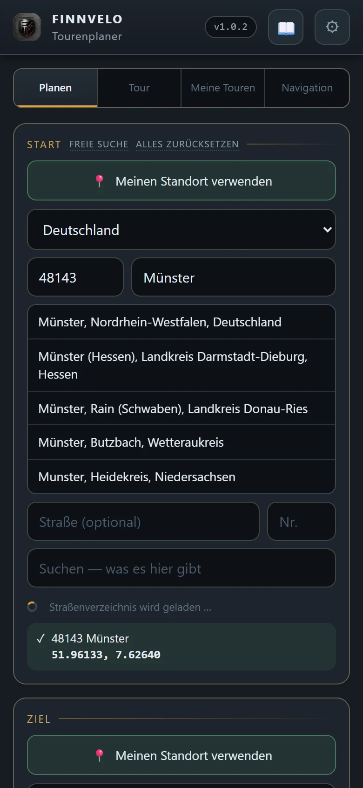
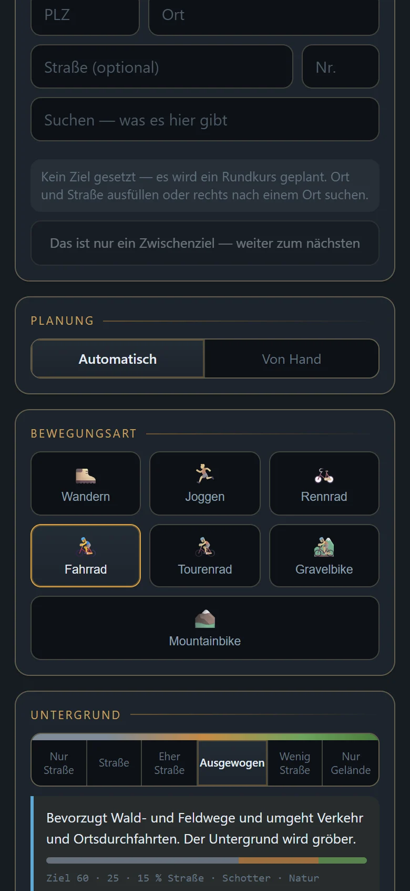
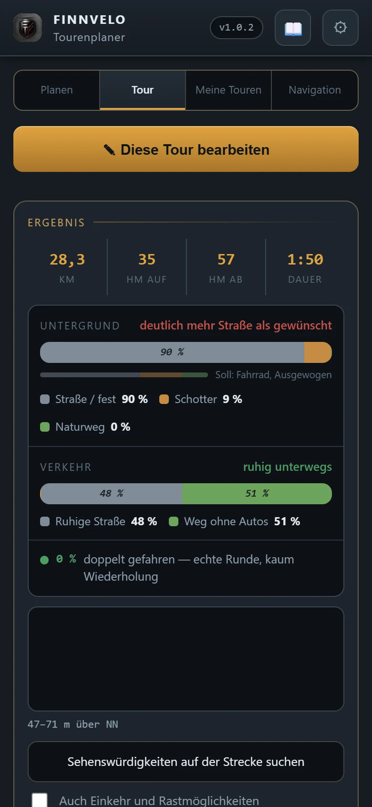
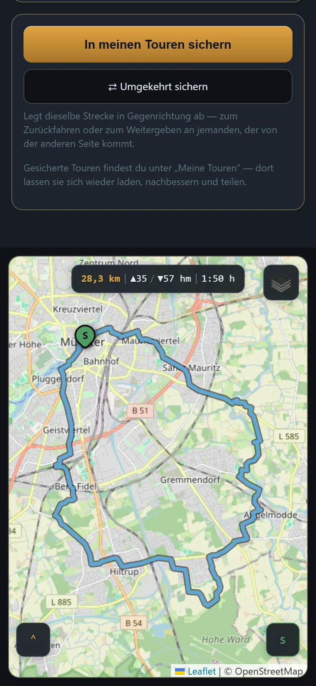
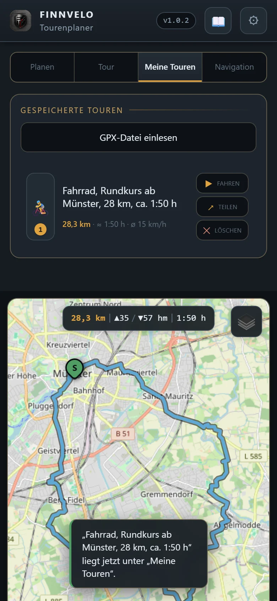
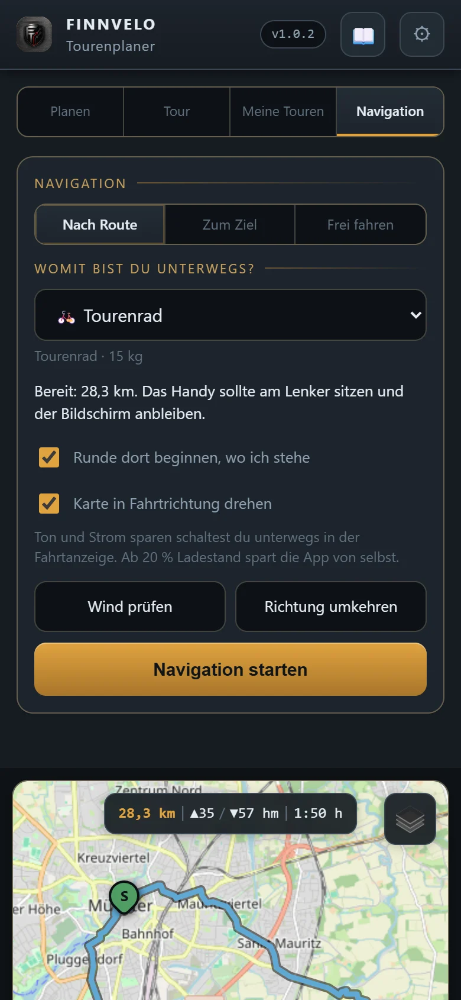
Einstellungen
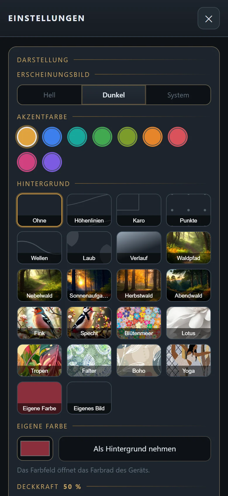
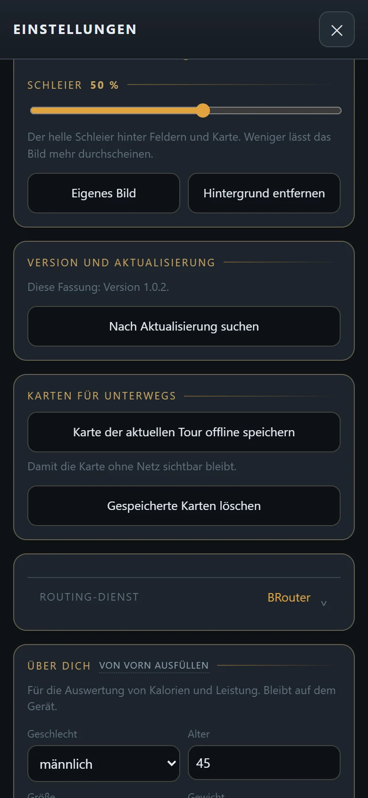
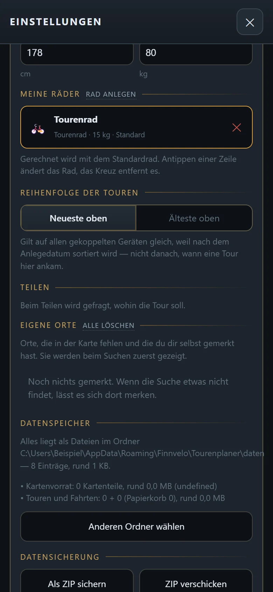
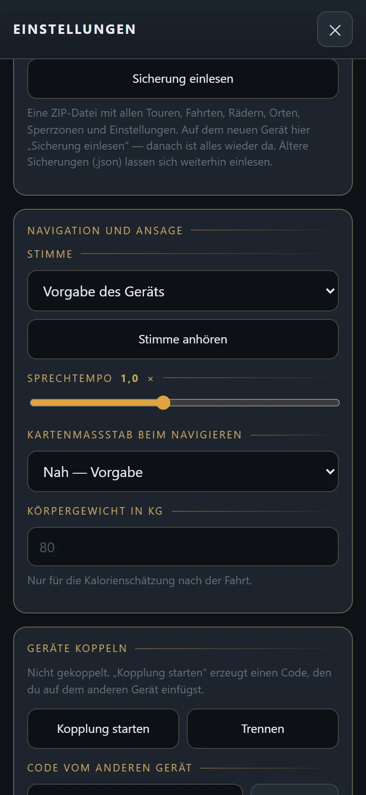
Am PC
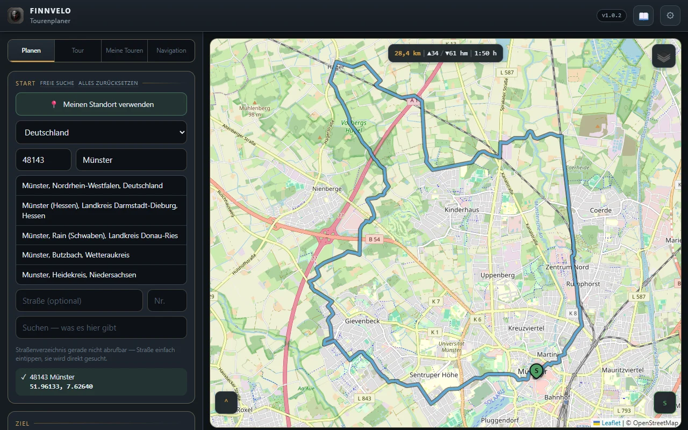
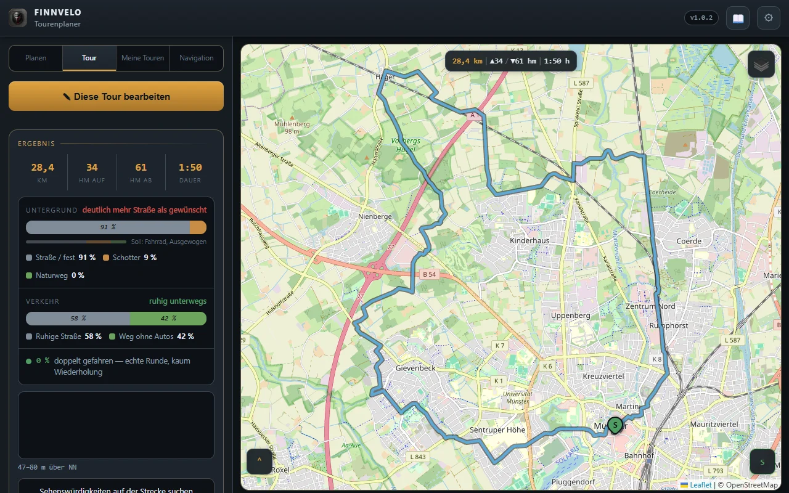
Einstellungen – das kannst du anpassen
Neben den Vorgaben bei jeder Planung bietet das Einstellungsfenster einiges, um die App auf dich zuzuschneiden:
Planung
- BewegungsartWandern, Joggen, Rennrad, Fahrrad, Tourenrad, Gravelbike oder Mountainbike.
- Automatisch oder von HandVorschlag berechnen lassen oder die Route selbst setzen.
- UntergrundVon „Nur Straße“ über „Ausgewogen“ bis „Nur Gelände“.
- LängeIn Kilometern mit Toleranz oder nach Zeit, auf Wunsch „Und zurück“ über zwei Wege.
- Sperrgebiete und SehenswürdigkeitenSperrgebiete meiden und Sehenswertes entlang der Strecke suchen.
Darstellung
- ErscheinungsbildHell, dunkel oder wie das System.
- AkzentfarbeNeun Farben zur Wahl.
- HintergrundMuster wie Höhenlinien oder Karo, Natur- und Tiermotive, eine eigene Farbe oder ein eigenes Bild – mit Deckkraft und hellem Schleier.
Karten und Routing
- Karten für unterwegsDie Karte der aktuellen Tour offline speichern, gespeicherte Karten löschen.
- KartenartStandardkarte, topografische Karte oder Radkarte, umschaltbar auf der Karte.
- Routing-DienstWelcher Dienst die Route berechnet, ab Werk BRouter.
Über dich und deine Räder
- Über dichGeschlecht, Alter, Größe und Gewicht – nur für Kalorien und Leistung, bleibt auf dem Gerät.
- Meine RäderRäder mit Art und Gewicht anlegen, eines als Standard.
- Eigene OrteOrte, die auf der Karte fehlen, selbst merken – sie erscheinen bei der Suche zuerst.
Navigation und Ansage
- Stimme und SprechtempoStimme wählen und anhören, Tempo der Ansagen einstellen.
- Kartenmaßstab beim NavigierenWie nah die Karte unterwegs heranzoomt.
- Runde dort beginnen, wo ich steheUnd die Karte in Fahrtrichtung drehen.
Daten, Teilen und Geräte
- Reihenfolge der TourenNeueste oder älteste oben.
- TeilenBeim Teilen fragt die App, wohin die Tour soll.
- DatenspeicherAlles liegt als Dateien in einem Ordner, der sich wechseln lässt.
- DatensicherungAls ZIP sichern, verschicken und auf einem neuen Gerät wieder einlesen.
- Geräte koppelnPer Code mit einem zweiten Gerät verbinden oder die Kopplung trennen.
- Anzeige am PCFenster, randloses Vollbild oder Vollbild, Fenstergröße, Zoom und Menüleiste.
Besondere Vorteile
- Kein langes Suchen – Wunschlänge nennen, Vorschlag bekommen
- Rundkurs oder Zielpunkt, je nachdem was gerade passt
- Wegbelag und Sperrzonen lassen sich vorgeben
- Navigation mit Sprachansage, auch ohne Netz
- Als Android-App und als Windows-Programm
- Alle Daten als Dateien auf dem eigenen Gerät, Sicherung als ZIP
- Auswertung von Untergrund und Verkehr für jede Tour
- Kein Konto und keine Anmeldung
Zielgruppe
Für alle, die gern draußen unterwegs sind und nicht jedes Mal von Neuem eine Strecke zusammensuchen wollen – ob zur Feierabendrunde mit dem Rad, zur Wanderung am Wochenende oder zur festen Laufrunde. Wer genaue Vorstellungen hat, gibt sie vor; wer einfach los will, nimmt den Vorschlag.
- Radfahrerinnen und Radfahrer, die nach Feierabend eine Runde mit fester Länge und ruhigen Wegen suchen.
- Gravel- und Mountainbiker, die bewusst viel Schotter und Gelände wollen.
- Wanderer und Läufer, die neue Runden direkt vor der Haustür entdecken möchten.
- Wer seine Touren am PC plant und unterwegs am Handy nachfahren will.
Daten und Datenschutz
Touren, Fahrten, Räder, eigene Orte und Einstellungen liegen als Dateien auf deinem Gerät. Es gibt kein Konto und keine Anmeldung. Angaben über dich werden nur für die Kalorienschätzung genutzt und verlassen das Gerät nicht.
Für die Planung braucht die App das Netz: Kartenkacheln kommen von OpenStreetMap und verwandten Kartendiensten, Orte von der Ortssuche, die Route vom Routing-Dienst, Sperrgebiete und Sehenswürdigkeiten aus OpenStreetMap-Daten und das Wetter von Open-Meteo. Gespeicherte Karten und Touren funktionieren unterwegs auch ohne Netz. Beim Koppeln werden die Touren verschlüsselt zwischen deinen Geräten ausgetauscht.
Tutorial-Video
Ein Tutorial-Video wird hier ergänzt, sobald es bereitsteht.
Download (Android-App)
Hauptdatei
Die Android-App als Installationsdatei. Da sie nicht über den Play Store verteilt wird, muss Android beim Öffnen der Datei einmalig die Installation aus unbekannter Quelle erlauben.
Download startenWeitere Versionen und Patches
Platzhalter für spätere Updates, Patchdateien und ältere Versionen.
Download (PC-Version)
Programm herunterladen
Installationsprogramm für Windows. Die PC-Fassung bietet dieselbe Planung wie die App; Touren lassen sich zwischen Rechner und Handy austauschen.
PC-Version herunterladenHinweis
Windows meldet bei unbekannten Programmen einen Warnhinweis. Über „Weitere Informationen“ → „Trotzdem ausführen“ lässt sich der Start fortsetzen.